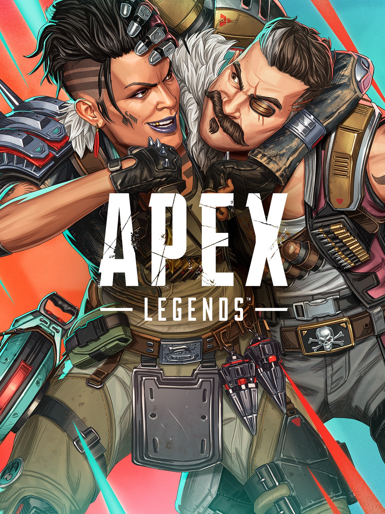

Apex Legends es un videojuego gratuito de género battle royale con elementos de héroes, desarrollado por Respawn Entertainment y publicado por Electronic Arts. Fue lanzado el 4 de febrero de 2019 para PC, PS4 y Xbox One, y posteriormente para otras plataformas. En el juego, los jugadores forman equipos, eligen personajes (“Leyendas”) con habilidades únicas, y compiten en arenas dinámicas por la victoria. El estilo combina la rapidez y movilidad del universo de Titanfall con la estructura táctica de los shooters por equipo.
El desarrollo de Apex Legends estuvo a cargo de Respawn Entertainment, un estudio con experiencia en shooters como la serie Titanfall. Electronic Arts funge como editor y distribuidor. Dentro del equipo de desarrollo hubo figuras clave como Steven Ferreira (Game Director), Ben Brinkman (Executive Producer) y Manny Hagopian (Creative Director). El proyecto se mantuvo en secreto hasta su salida sorpresiva, lo que ayudó a generar impacto inmediato en el lanzamiento.
Las últimas temporadas del juego han introducido modos y mecánicas innovadoras para mantener la experiencia fresca y competitiva. Por ejemplo, la temporada 26, llamada “Showdown”, lanzó el modo permanente Wildcard, que permite que los jugadores elijan la misma Leyenda entre todos los miembros del equipo, incorporar reinicios automáticos mientras quede algún miembro vivo, y simplificar el botín para partidas más intensas. También se han añadido armas élite, ajustes importantes al sistema de clasificación y nuevas funcionalidades de juego que elevan la dinámica táctica del entorno. Aquí podés ver que Respawn Entertainment continúa enfocando al juego tanto en el contenido como en el rebalanceo constante de personajes y mecánicas.